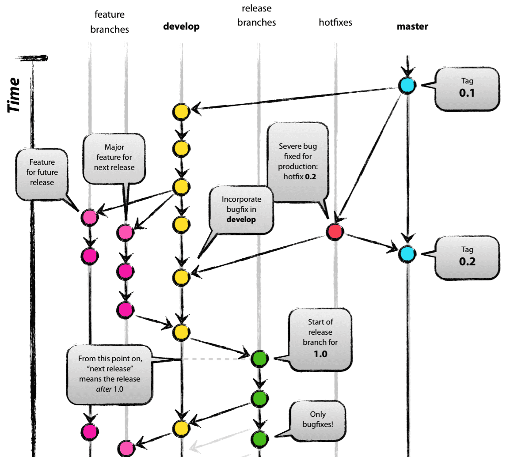
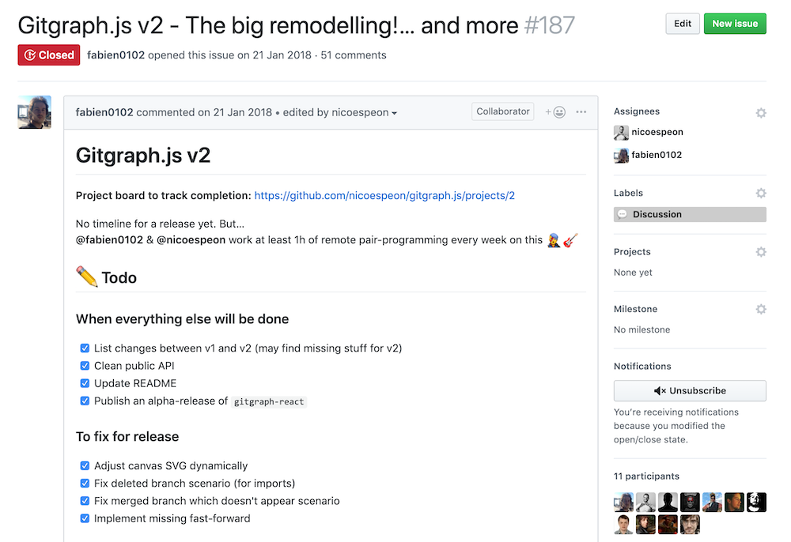

;

Nicolas Carlo
@nicoespeon
Drawing Git Graphs
in the Browser
This is the story of a problem I had


We were teaching git to engineers

üòç
Source: nvie.com
"I wish we would a JS¬†library to draw git graphs in the browser!" ‚Äî Nicolas üèñ
"Hold my beer!" ‚Äî Fabien üç∫
You can hack your own problems!
When you have a crazy idea in mind, do it
Gitgraph.js v1
v1 was awesome üåà
- solved our problem
- highly customizable
- no dependency, 6.3kB gzipped
- we had fun üé∑
ü§î
- How do you deal with issues? With PRs?
- Modelling made some features hard to implement
- No test. How to test a rendering lib?
Hack your way out of your problem
An OK execution is better than a perfect idea
But, still… We want:
- tests
- better separation of responsibilities
- types & modern tooling
Time for v2
üë∑ New architecture
+----------------+
+----| @gitgraph/core |-----+
| +----------------+ |
v v
+-----------------+ +--------------+
| @gitgraph/react | | @gitgraph/js |
+-----------------+ +--------------+
üá®üᶠ<-> üá©üá™
Weekly remote pair-programming!
üèó We built v2 over 1 year
What I learnt in the process
üí¨ Pair-programming eases communication

Our weekly session
- 15min of "how are you doing dude?!"
- 5min of "here's the next challenge to solve"
- 40min of achieving the challenge
Our recipe (TDD)
- Write a failing test
- Write the simplest code to make the test pass
- Refactor the code
‚úÖ Types are super-helpful
ü§ñ Automate the non-important stuff
Formatting is for Prettier. Stop wasting time.
Simplifies packages management
Monorepo ≠ Monolith

lerna bootstrap | publish | …

üõ£ git worktree
- Checkout more than one branch at a time
- Synced to the same git repository
git commit --allow-empty
üëå simulate commits without bothering with changes

Useful to trigger the CI
  
 
E2E tests of rendering libs in Storybook
Visual regression test with Chromatic QA
Don't wait, hack your own problems!
You will learn a lot in the process
v2 is out!
üíÅ‚Äç What's in there
- 2 SVG rendering libs: @gitgraph/js & @gitgraph/react
- Give you a git-like API
- Types, tests & stories
- Experimental import() function
// import { Gitgraph, … } from "@gitgraph/react";
<Gitgraph>
{gitgraph => {
}}
</Gitgraph>
// import { Gitgraph, … } from "@gitgraph/react"; <Gitgraph> {gitgraph => { }} </Gitgraph>
You have an idea in mind?
Just do it. It doesn't have to be perfect.
github.com/nicoespeon/gitgraph.js/
üôè Thank you
üé§ soonly available at bit.ly/skillscasts-nyc-2019